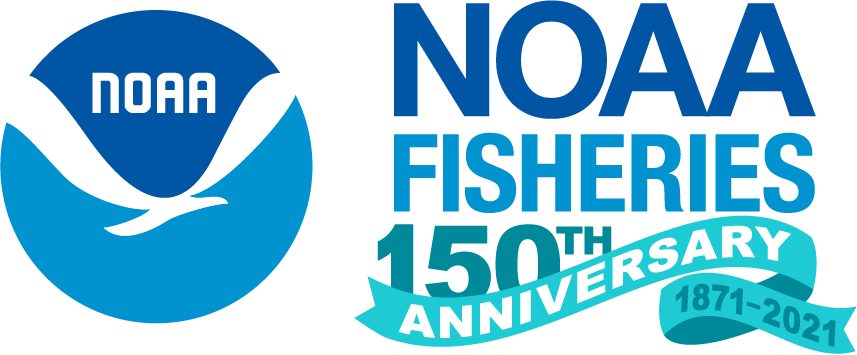

Cohort Summary
Sponsored by NOAA NWFSC, coordinated by Eric Ward and Mary Hunsicker
(National Oceanic and Atmospheric Administration Northwest Fisheries Science Center)
Related blog posts:
Participating teams:
- Conservation Biology division
- Environmental and Fisheries Science division
- Fish Ecology division
- Fishery Resource Analysis and Monitoring division
Program Overview
This is a professional development and leadership opportunity for NWFSC researchers to explore open data science practices.
Openscapes Champions is a remote-by-design mentorship program for environmental and Earth science research teams to explore open data science practices. Participants attend as a team with their research group in a cohort with other teams, together learning how to reframe data-intensive science as a collaborative effort. By discussing open software tooling and communities enabling reproducible research (e.g. R/Python, GitHub, metadata), participants develop collaborative skills, mindsets, and habits and establish shared practices for increased efficiency in their own research, while contributing to a more inclusive scientific culture.
This opportunity is funded and coordinated by NOAA Northwest Fisheries Science Center (NWFSC).
Reuse
Citation
BibTeX citation:
@online{openscapes2021,
author = {Openscapes and Openscapes and NWFSC},
title = {Openscapes {Champions:} {NOAA} {NWFSC} {Cohort}},
date = {2021-03-12},
url = {https://openscapes.org/posts/2021-03-12-nwfsc},
langid = {en}
}
For attribution, please cite this work as:
Openscapes, and Openscapes and NWFSC. 2021. “Openscapes Champions:
NOAA NWFSC Cohort.” March 12, 2021. https://openscapes.org/posts/2021-03-12-nwfsc.